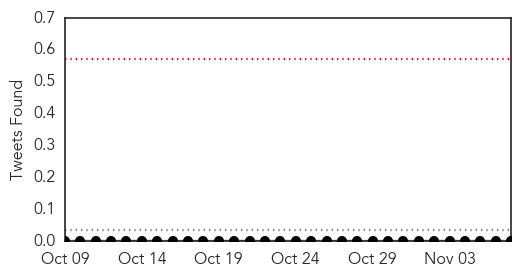

Swine Flu
30-Day Web Trend
0 alerts, 0 warnings

30-Day Twitter Trend
0 alerts, 0 warnings

Article Locations

Article Confidences
Top Articles:
- 0.975
- Santa Clara County Reports 10 Flu Deaths This Season
- 0.975
- To handle swine flu, Chandigarh administration starts 24×7 helpline
- 0.920
- As flu season begins, health officials wary of another vaccine mismatch
- 0.918
- Flu vaccine madness: FDA expediting approval for deadly flu shot linked to autoimmune disorders, paralysis & death -- Health & Wellness -- Sott.net
Top Tweets:
-
No tweets found for Nov 07, 2015
Mumps
30-Day Web Trend
1 alerts, 0 warnings

30-Day Twitter Trend
0 alerts, 0 warnings

Article Locations
Article Confidences

Top Articles:
- 0.995
- To slow mumps spread, UI offers students free vaccination
- 0.994
- University of Iowa to hold vaccine clinics next week as mumps outbreak tops 100
- 0.977
- UI Offers Free Mumps Vaccines to Students
- 0.954
- University of Iowa to provide free mumps vaccine to students
- 0.925
- Confirmed Case of Mumps in Grayson County school
- 0.835
- AP top news in Iowa at 3:58 p.m. CST
- 0.739
- University of Iowa To Offer Mumps Vaccines Amid Outbreak
Top Tweets:
-
No tweets found for Nov 07, 2015